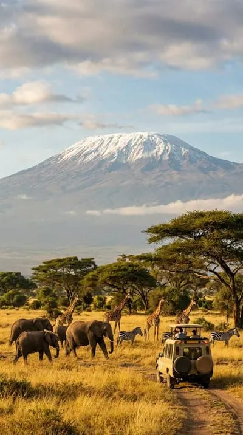

About
Kenya is known for diverse cultures, beautiful landscapes, wildlife, beaches, and vibrant cities across the country.
Culture
Kenyan culture is diverse, blending many ethnic traditions, languages, music, food, family values, and strong community relationships.
Attractions
Popular attractions include Maasai Mara, Mount Kenya, Amboseli, Nairobi National Park, coastal beaches, and Lake Nakuru.
Data
Kenya's:
- Capital: Nairobi
- Currency: Kenya shillings (KES)
- Time Zone: East Africa Time (EAT), three hours ahead of UTC.
Weather
Kenya has a varied climate, with warm temperatures, rainy seasons, dry periods, and cooler conditions in highland regions.
- Temperature: 9°C
- Conditions: Partly Cloudy
- Wind: 6 km/h
- Wind Chill: